Visual Effects: Lesson 04: Driving the Fade Distance and Depth Fade Settings with a Dynamic Parameter
Now that we have our FX Material looking fairly acceptable, I am going to show you how to modify some of the material settings over the life of a sprite, with Cascade.
There are many cases where we want to modify the behavior of a material in time with the scale, color, opacity, and lifetime of a sprite.
Some of the more advanced materials in the effects showcase content make extensive use of this way of working, to really sell an effect.
Let’s get started by making a duplicate of your DepthCameraFade Material in the content browser and name it M_Trans_Unlit_DepthFadeDynamic.
Now I realize the names of these materials are beginning to get a tad lengthy, but what I am hoping to do here is provide you the building blocks of a more complex FX material. Hopefully at the end of this process you will have a small library which you can go back and reference in order to see each component if you happen to forget how any individual part works later on.
Open your new material by double clicking on it in the content browser.
Start by adding your NearCameraFade Function like we did previously, and set the Fade distance to 8 so that we have a tight distance.

Next click in the empty area and begin typing dynamicparameter.
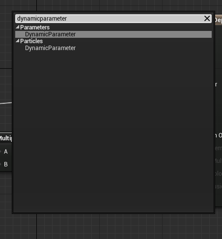
Choose Dynamic Parameter from the list and a Dynamic Parameter expression will drop into your graph.
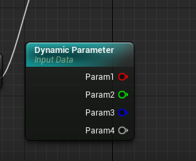
Notice that the Dynamic Parameter has 4 outputs, colored just like the particleColor expression. This is because the Dynamic Parameter essentially functions in the same manner as the particleColor expression. In fact, you can use the particleColor expression to control more than just color/alpha because you are essentially passing float values from Cascade to a material. The Dynamic Parameter just allows for 4 more ways to modify a material in real time.
It is also important to note that the Dynamic Parameter’s default value is 0.00. In some cases this can mean you get results which can be visually confusing, until you set your values.
Now, let’s take the output of Param1 on the Dynamic Parameter and plug it into the Fade Distance Input of our Depth Fade expression, and compile the material.
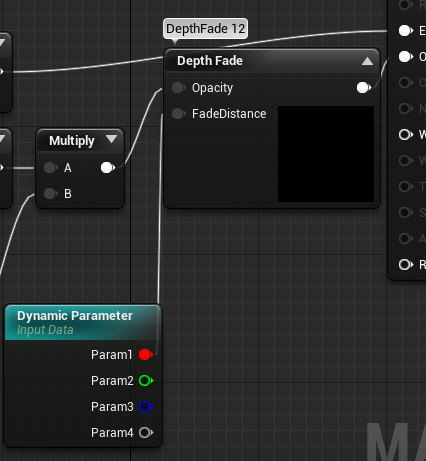
Next, in the content browser let’s find our P_DepthFade particle system and duplicate it. I am naming mine P_Dynamic.
Drop your effect into the default level in the perspective viewport by dragging it from the content browser into the viewport.
Open the effect and assign your new Dynamic Material to the emitter. Note in the viewport that you now have a hard edge where the Depth Fade expression was previously softening the edge.
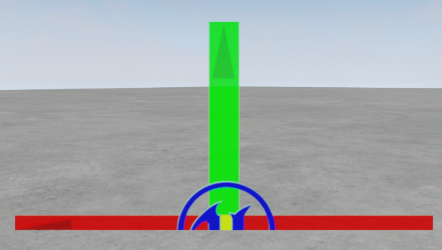
Now for the “dynamic” part of the tutorial :) rclick in the empty area of the emitter stack in Cascade, and choose Parameter>Dynamic
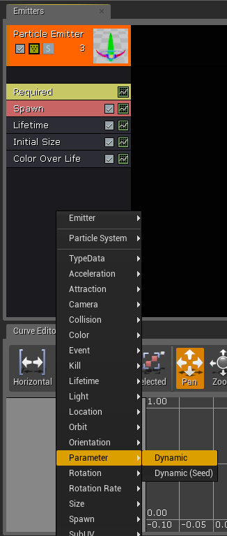
Note in the details panel that you have 4 parameters which we can manipulate.
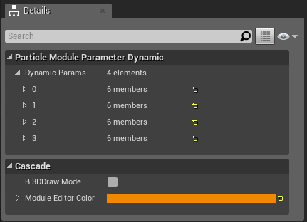
These correspond to the 4 outputs on the Dynamic Parameter in your material. These are essentially values we are going to be passing to the material at run time.
To make this easier to read expand input 0 by clicking the drop down arrow to the left of the 0. Continue opening the settings until your 0 parameter looks like this.
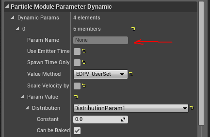
Notice that we have a ParamName field which I have pointed to with a red arrow. Return to your material and click the Dynamic Parameter expression. In the details panel, change the name of the first parameter to Fade Distance and compile the material.
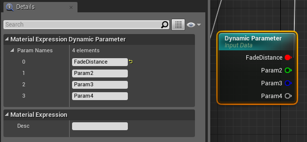
Note that the Dynamic Parameter expression updates with this new parameter name. It is helpful when adding a Dynamic Parameter to name the parameters so that it is easier to decipher what the parameter is controlling if you return to the material in the future. This is also beneficial to other team members who won’t have to decipher your material network to get an idea of what your parameter is controlling.
Return to Cascade, and rclick the Dynamic Parameter module and choose refresh module.
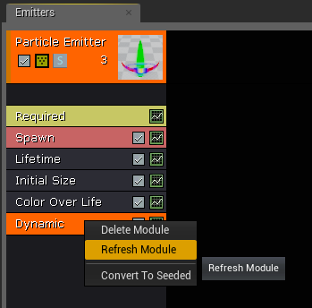
Note that your ParamName field in the module should now list Fade Distance, where it previously listed None.
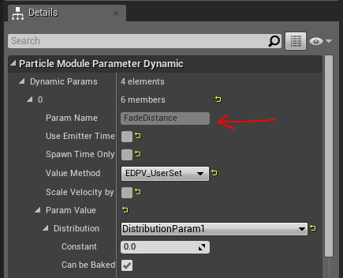
Setting up your parameter names, also makes it easy to open an effect and get an idea of what the Dynamic Parameter is modifying, without having to open the material.
Now, let’s set the Constant value to 16. Note that your particle now has a softened edge.
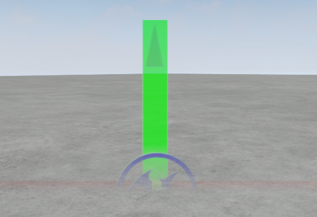
Let’s try and make this more dynamic and map the parameter to a curve. Select the distribution drop down and choose constant curve.
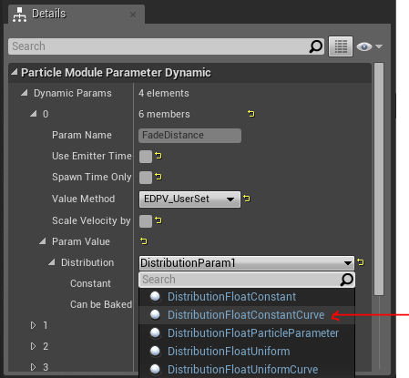
Map the curve as we did previously, but make the range between 0 and .35. For the 0 Out Value specify 4, and for the .35 Out Value specify 0.0
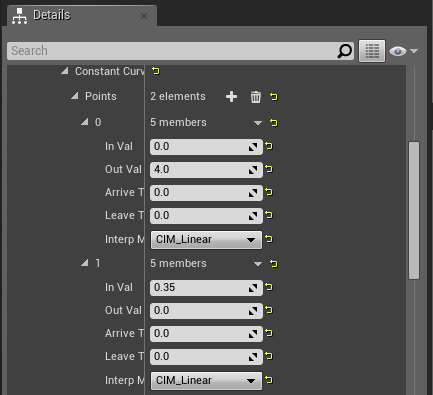
Now, you should see the Depth Fade value on your sprite animate from a soft edge, to a completely hard edge over the life of your particle.
Next, let’s select the spawn module and change the spawn rate to 10. Click in the empty area of the emitter stack and choose location>Sphere and emit the particles from a spherical position.
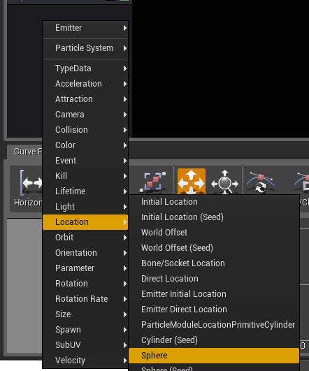
Select the Sphere module and disable the posZ and negZ emission positions so we only have emission along the X,Y axis of the sphere. This will keep all of our particles emitting from a circle at the ground level.
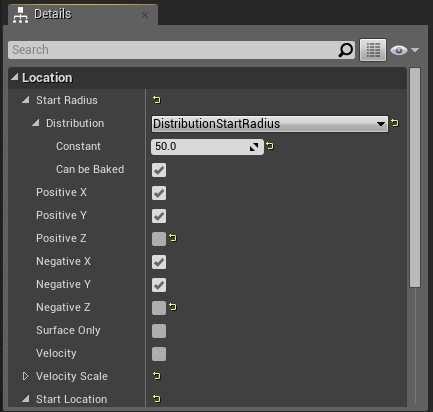
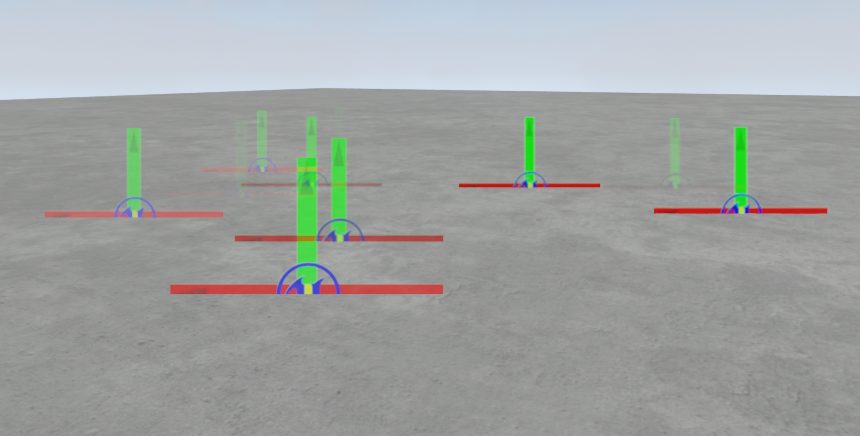
Now select the Dynamic Parameter module again, and this time change the distribution to Uniform.
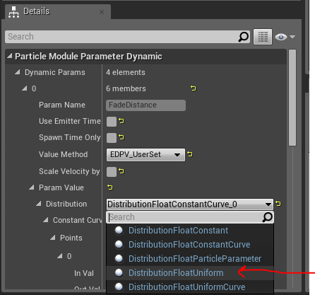
Set the Uniform distribution to min 0 and max 32.
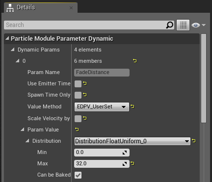
Notice in your viewport that the particles now have a soft edge, but they appear to be flickering randomly. This is because the uniform distribution is being calculated each frame, so it is returning a value anywhere between 4 and 32 each frame. This may be a cool trick to achieve a particular look, but in this case it is not the look we want. We want each particle to have a unique value, for the lifetime of the sprite. Luckily we have a setting on the dynamic parameter to take care of this. Check the Spawn Time Only box.
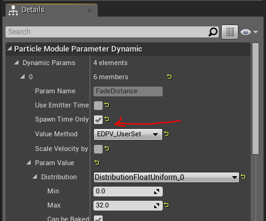
Now if you watch your particle system, you will see that the sprites are returning a fixed value, set for the life of the particle. This value is defined per particle at the time the particle is spawned. This is a very powerful feature which can be used in any number of ways to add variation and randomness to your effects. You can probably already think of a few cool ways to take advantage of this feature. That should get you started with the Dynamic Parameter module, try using it in conjunction with your CameraDepthFade material function and see what kind of results you get.
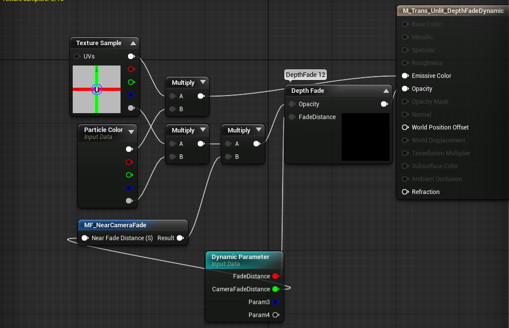
Later on when I cover GPU particles, I will show you how to use the ParticleColor module as a dynamicParameter module.